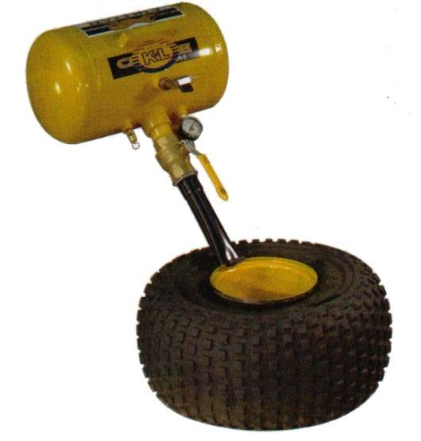

On a tubeless tyre, the bead must seal against the rim edge before the tyre will hold air. If there is a gap between bead and rim, the pump cannot build pressure. This page covers ways to close that gap. It is an assessment and hand-off for most readers: seating a bead can throw the tyre off the rim with force.
Safety
- Never exceed the maximum inflation or bead-seating pressure printed on the tyre sidewall or the rim. Use the value on your tyre or in your bike's manual.
- Keep your face and body away from the wheel while it seats. Do not lean over the tyre.
- Never use fuel, flammable spray or any fire to seat a bead.
- If the rim is cracked or bent, stop. Do not inflate.
You need
- Clean rim edges and bead seats with no dirt or old sealant.
- Plenty of lubricant on both beads and the rim.
- One of these helpers: a bead expander, a ratchet strap or rope with a lever, a rubber ring that fills the gap, or a pump or tank that can deliver a lot of air very fast.
Steps
- Remove the valve core so air flows in quickly. Check the rim edges for cracks.
- Lubricate both beads and the rim well. A dry bead will not slide into place.
- Make the beads touch the rim. Options: - Wrap a strap or rope round the middle of the tread and tighten it. This squeezes the tyre so the beads move outward. - Fit a bead expander as its maker says. - Fit a rubber ring in the gap to close it while you pump.
- Pump a lot of air quickly. A tank with a wide hose does this best.
- When you hear the beads pop onto the rim, remove the strap or tool. Refit the valve core.
- Inflate to the cold pressure in the manual. The thin moulded line round each sidewall should be the same distance from the rim all the way round.
- If a bead does not seat, release air, lubricate again and repeat.
- Finish with soapy water on the bead and valve to look for bubbles.
Check your work
- The line on the sidewall is even on both sides.
- No bubbles from the bead or valve.
- Pressure is the same after an hour.
If it did not fix the problem
- The bead leaks: Air leaking where the tyre meets the rim.
- Rim damage: Rim is dented or cracked.
- If you cannot seat the bead safely, ask a tyre shop. See Replace a tyre.